Potential Flow Examples
The following flow images represent the range and complexity of flows that can be modelled using the Potential Flow system. Stream-function and Velocity Potential functions for each are contained in the MATLAB script file entitled stream.m.
Green lines are Equipotentials, Blue lines are Streamlines.
Horizontal Uniform Flow.
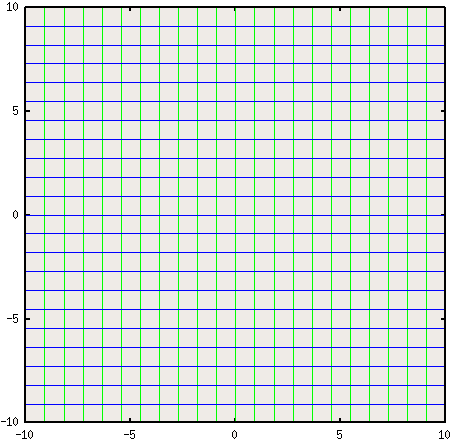
Uniform Flow at 10 Degrees angle of attack.
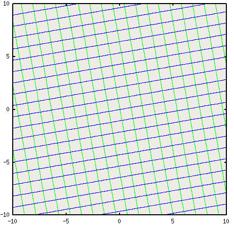
Source or Sink flow.
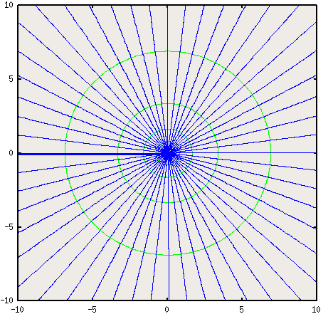
Vortex flow
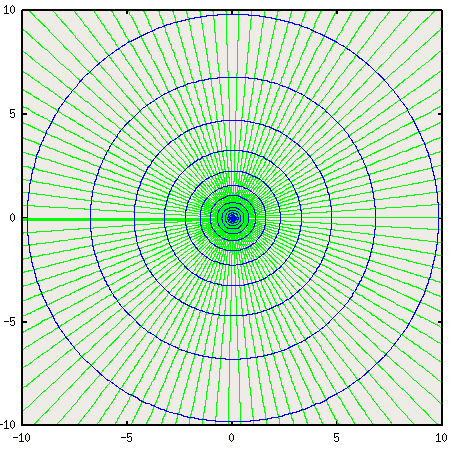
Source in horizontal stream.
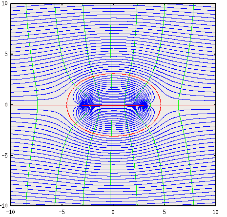
Vortex in Uniform Flow.
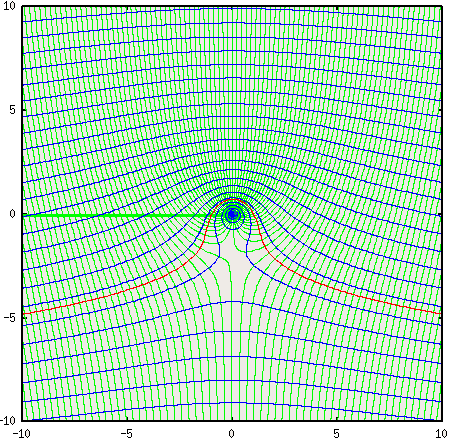
Source-Sink Pair.
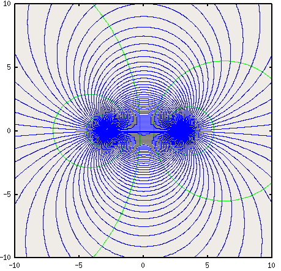
Source Sink Pair in uniform flow.
Doublet
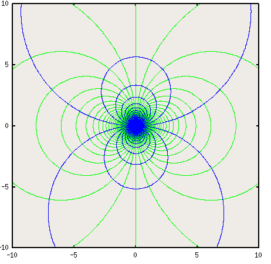
Doublet in Uniform Flow (Cylinder Flow)
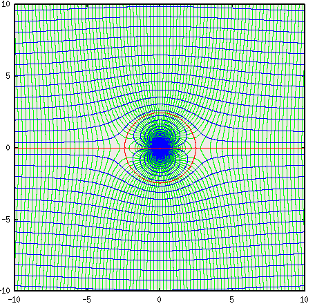
Rotating Cylinder in Uniform Flow.
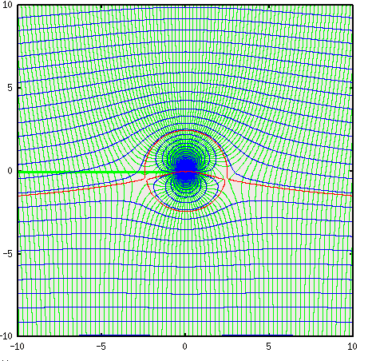
Fast rotating Cylinder in Uniform Flow.
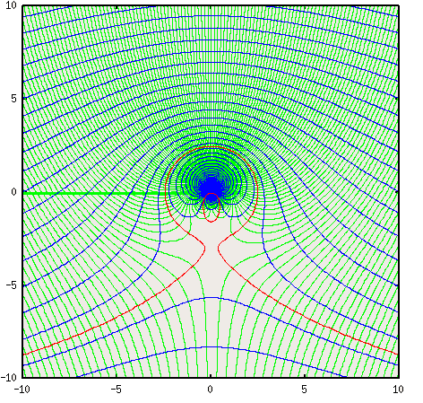
Flow in a Right Angle Corner.
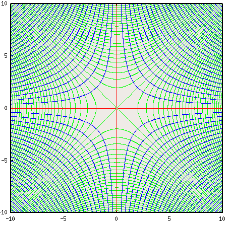
Cylinder Flow near Wall (Cylinder Image Flow)
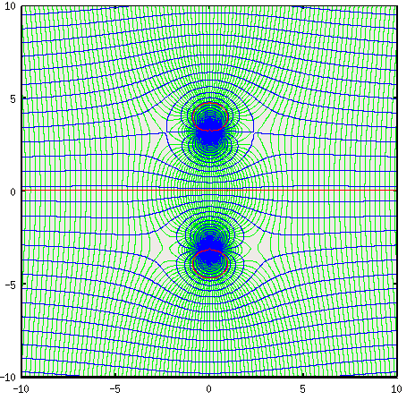
Source-Sink distribution in stream (Streamlined body).
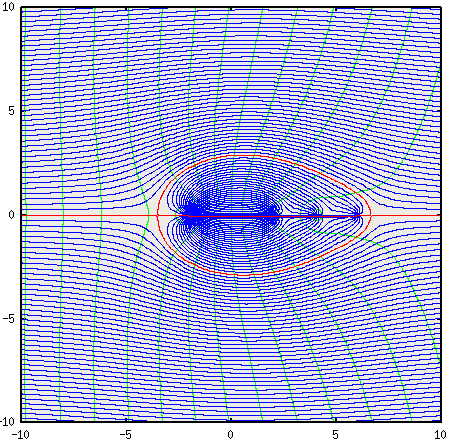
SOFTWARE
The following programs allow plotting of streamlines and velocity potential lines fro a variety of flows.